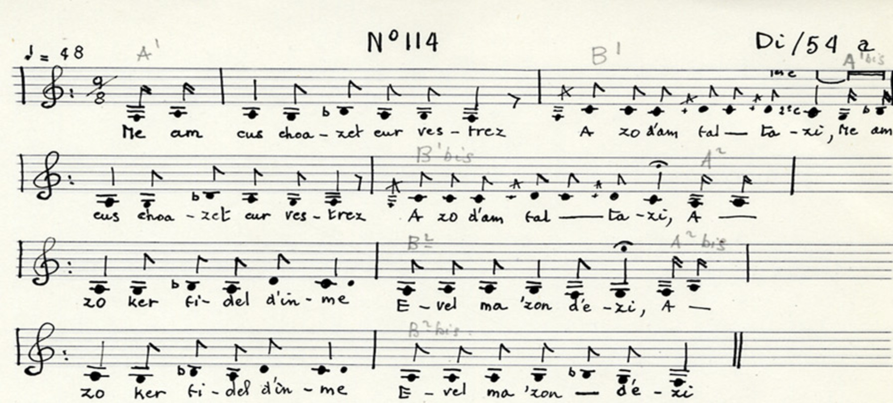
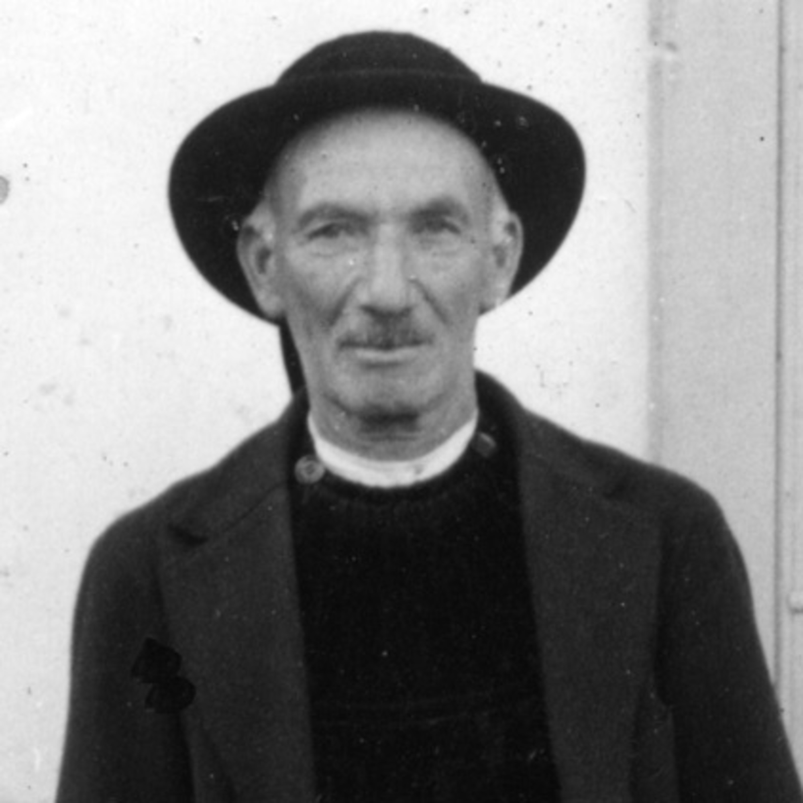
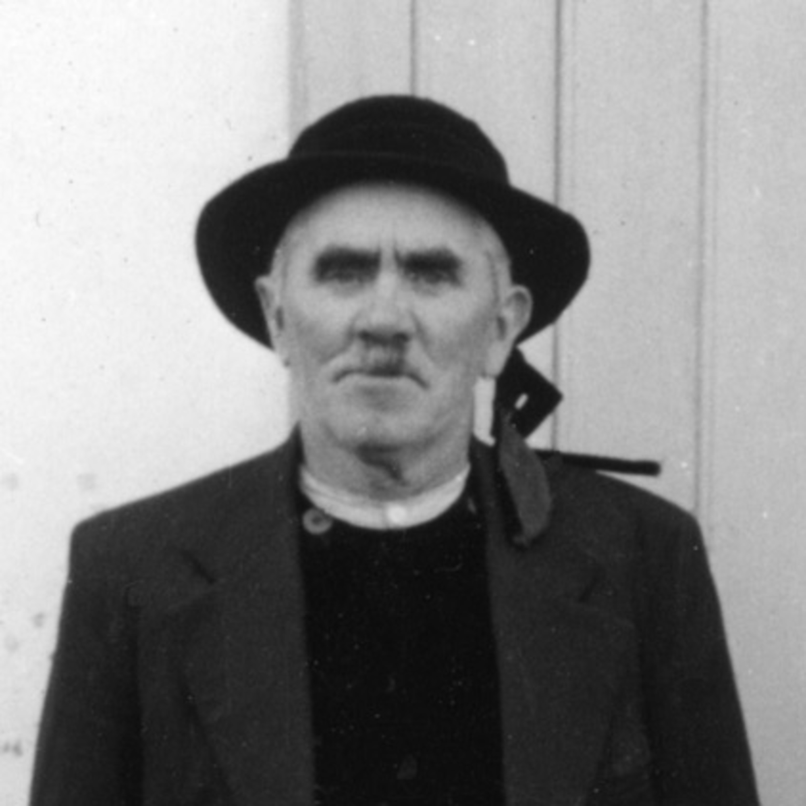

Ar minour
L'orphelin - The orphan
Textes recueillis par Théodore de La Villemarqué
Page 7 du 1er carnet de Keransquer. Non publié
et par la mission du Musée National des Arts et Traditions Populaires,
de 1939, conduite par l'Abbé François Falc'hun et Claudie Marcel-Dubois"
"Minour", chanté par Michel Le Pape, à Plovézet (Cornouaille), en août 1939

| La Villemarqué | Mission MNATP [5] | ||
|---|---|---|---|
|
P. 7 AR MINOUR 1. Me zo ur minour yaouank n'ez-eus den d'am kelenn, Me ya d'am-fenn me-unan na ne ran van a zen, 2. Mez me ez an bremañ [o vont d'ar rejimañt], [1] Da guitaat va promesoù da sesiñ va zourmañt. 3. M'am-eus choazet ur vestrez deus a-dostig d'am zi Goude Doue, den ebet ne garan nemeti! 4. Mez me ya da bediñ da zont da bardonaat, D'an eskopti a Dreger da Gouel Yann diwezhañ! 5. Mont a ree d'ar pardon gant karantez ha joa. En un distro d'ar ger, a reez promesoù! 6. Penn an tri pe pe'r devezh goude oa prometet Ha me a wel va mestrez hag hi bras-glac'haret. 7. Ne ga'en het he komzoù he seloù ken brilhant N'he c'haven mui asamblez e-mesk an tud yaouank. 8. Ha me a c'houl diganti tre ma oan glac'haret:, - Keuz -peus va mestrezig d'ar pezh -peus prometet? 9. - Ya keuz 'm-eus, va servicher d'ar pezh 'm eus prometet Birviken joa va c'halon ken vo din-me touet.- p. 8 10. - Ken guitaat eus ar ger me c'houlen diganeoc'h Ho mouchouer koton briz am-eus roit pell-zo d'eoc'h, 11. Bremañ me ga'o 'n implij d'an holl mouchouerioù Pa 'm echu 'r c'harantez da zec'hiñ va daeroù! 12. - Me zo 'r vinourez yaouank disterrañ zo er bed, Ha pa ven dime'et d'eoc'h-c'hwi, ne 'm-eus argourou ket. 13. Me zo 'r vinourez paour na 'n-eus na mamm na zat Nekun deus va ligne hag eme gar va mat. 14. Pep hini deus e chañs, ha dichañs naturel An dour ya d'an uzel, hag an tan d'an uhel. 15. Ar c'horf pa vez marv a c'houlen ar repoz. An ene pa zisparti, a c'houl ar baradoz. [4] Kaier Keransker Nv 1 |
P. 7 L'ORPHELIN 1. Personne pour instruire l'orphelin que je suis: Je vais seul à ma guise Libre de tout souci! 2. A présent il faut mettre, [car me voilà conscrit], [1] Fin à bien des promesses, A des tourments aussi. 3. J'avais une maitresse non loin de mon logis. Après Dieu, de nul être, je ne fus tant épris. 4. A la saint-Jean dernière la belle m'a suivi Au pardon que l'évèque de Tréguier a béni. 5. A ce pardon nous fûmes et l'un de l'autre épris Au retour nous nous sommes l'un à l'autre promis. 6. Trois, quatre jours à peine après ces beaux serments J'ai trouvé ma maitresse affligée grandement 7. Refusant ses paroles et ses regards brûlants Fuyant la compagnie des autres jeunes gens. 8. La voyant affligée Je vais lui demander - Est-ce votre promesse qui vous cause regret? 9. Oui, mon cher, je regrette d'avoir ainsi fermé Mon coeur à l'allegresse! Puisse un autre m'aimer! p. 8 10. - Avant que je m'en aille, rendez-moi mon mouchoir De soie grège que naguère daignâtes recevoir: 11. Tous les mouchoirs du monde, à peine vont suffire A sêcher tant de larmes, quand mon amour expire. 12. - Je suis une orpheline, De plus humble il n'est pas: Sans dot. Quel avantage de s'unir avec moi? 13. Je suis une orpheline de père et mère et n'ai Au sein de ma famille personne pour m'aimer. 14. Chacun en ce bas monde est soumis à sa loi: En haut le feu s'élance, l'eau coule vers le bas. 15. Le corps que la mort guette réclame le répis L'âme qui s'en sépare Mande le paradis. [4] Traduction Christian Souchon (c) 2014 |
ME ZO UR MINOUR YAOUANK [2] 1. Me zo eur minor yaouank, n'am-beuz na mamm na tad, Na nikun deus va linez an geinen a m'em-boa. 2. Me am-eus choazet ur vestrez, a zo d'am faltazi, A zo ker fidel din-me evel ma von dezhi. 3. Pa ven kichen va mestrez Ar pezh a garan parfet. Ha pa ven tri devezh 'yunañ n'em-eus naoñ na sec'hed. 4. N'en-doez na dir nag houarn ken kreñv hag ar jadenn, Zo formet en amitiet etre-kreiz an daou zen. 5. Pa railôoud o yaouankiz gant enor ha rispet Emañ a oa ar c'honduit netra da lavared. 6. Devez trist ha deplorap dastumad evito Araok tennad ar bilhed, [3] en-doa graet promesoù! Kanet gant Mikel Le Pape ha Yann-Vari Ar Gov e Plozevet 6.8.1939 Transcription phonétique de l'Abbé Falc'hun |
JE SUIS UN JEUNE ORPHELIN [2] 1. Je suis un jeune orphelin Qui n'ai ni père ni mère Ni personne de ma lignée De tous ceux que j'avais! 2. J'ai choisi une maîtresse, Qui est à ma fantaisie, Qui m'est aussi fidèle Que je le suis à elle-même. 3. Auprès de ma maîtresse, Ce que j'aime parfaitement - Dussé-je jeûner trois jours Je n'ai ni faim ni soif. 4. Il n'est ni fer ni acier Aussi fort que la chaîne Qui s'est formée par l'amitié entre ces deux jeunes gens. 5. Ils vivent leur jeunesse avec honneur et respect C'est cela la bonne conduite: Il n'y à rien à redire. 6. Jour sombre et déplorable Venu fondre sur eux Avant de tirer le billet [3] Ils avaient fait des promesses. Traduction F. Falc'hun et Claude Marcel-Dubois |
English Translation: "The orphan"
|
LA VILLEMARQUE 1. I am a young orphan No one pays for my school, I must shift for myself Help is more than I can thole, 2. But I must leave from here, [As the draft board did tell]: [1] Adieu, my promises! And my torments farewell! 3. I had chosen a sweetheart In the vicinity. No one was so dear to me, But the blessed Trinity. 4. Now I've requested her On pilgrimage to be In Tréguier bishopric Next Saint John's day with me 5. To the "pardon" we went: When love his arrow fledged. We were, on our way home, To one another pledged. 6. Three or four days only After our betrothal I encountered my girl She was not pleased at all. 7. She dodged my questions I couldn't catch her glance. She would keep clear of me Never appear at a dance. 8. I asked: -Tell me why did Your bright complexion fade? Do you, Darling, regret The promise you have made? |
9. - O, I regret for sure Those rash words! May release Me a new proposal, Setting my heart at ease! 10. - Now, I'm leaving from here. I have a request though: The mottled handkerchief, I gave you, long ago: 11. I could use it and all Kerchiefs on earth, since my Poor love has flown away, That my eyes I may dry. 12. - I am an orphan lass The humblest on earth, too, Would have brought no dowry If I had married you. 13. I'm a poor orphan lass: On spear and distaff side Have no one who has wished Ever that I would thrive. 14. All things are, in this world, Subject to their own law Fire rises to the skies To the ground waters draw. 15. It is rest that body Requires, the day it dies. And when the soul departs It yearns for paradise. - [4] Translation Christian Souchon (c) 2014 |
MNATP 1. I am a young orphan, [2] I have neither father nor mother, Or anybody of my race Of all those related to me. 2. I have chosen a sweetheart Who is very much to my taste, She is as faithful to me As I am to her 3. To be with my beloved Is what I like most Even if I am to fast three days I feel neither hunger nor thirst. |
4. There is no iron or steel as strong as the chain Wrought by the friendship between those two young people. 5. They enjoy their youth in honour and respect. They observe the proprieties There is nothing to be said against them. 6. Day of sadness and gloominess That swept down on them Even before he was unlucky at the draft, [3] They were engagedto one another. |
Notes
|
[1] Donatien Laurent a lu ici "eoar an agissant" qu'il a renoncé à traduire. Peut-être la référence, p.249 des notices bibliographiques des "Sources" éclaire-t-elle ce point (Périodique "Gwerin 2": Gabriel Milin, "Digouvi en amouruz" - "L'amoureux éconduit"). On a supposé que le chant du cahier d'enquête de La Villemarqué correspond au "Me zo ur minour yaouank" recueilli en août 1939 par la mission du MNATP auprès de Michel Le Pape et de Jean-Marie Le Goff à Plozévet. Cette deuxième pièce est à l'évidence un "chant de conscrit", comme il ressort de la strophe 6. [2] Le chant de Michel Le Pape et de Jean-Marie Le Goff fait l'objet de la fiche de synthèse N° 114 de l'enquête du MNATP. En voici des extraits: "4. se chante dans les fêtes, les noces, en revenant des pardons, en veillées pendant les menus travaux tels que couper les feuilles de carottes. 5. Chanson sur feuilles volantes imprimées, distribuées, dans les pardons ou vendues par des marchands ambulants. Apprise par les informateurs au pardon de Penhors vers 1890. Cette chanson est encore connue de quelques personnes âgées.  6. Le Pape (Michel), cultivateur, diseur de prières ou de grâces" pour les défunts aux veillées mortuaires (de la tombée du jour à minuit). Né en 1874 à Plozévet...où il a toujours habité, sauf 3 ans dans la marine et Jean-Marie Le Goff dit le "maire de Kergolier", cultivateur et compositeur de chansons, né à Plozévet en 1877, où, lui aussi, a toujours habité, sauf 3 ans dans la marine et 4.5 ans de guerre 14-18... Tous deux savent lire et écrire....7. Chanson de conscrit. Forme A1 B1 A1bis B1bis A2 B2 A2bis B2bis. Ambitus type. Echelle ton type. Pause à la tonique et à la sus-tonique. Résolution à la tonique. Style cantique. 8. Deux voix d'hommes. 9. Breton de Cornouaille. 10. Histoire d'un jeune orphelin qui a donné tout son amour à une jeune fille et lui a fait des promesses, mais, "un jour triste et déplorable", tire au sort le mauvais numéro. On suppose... que le jeune homme est alors obligé de partir au service et d'abandonner sa promise. Les n° 102 et 104 sont aussi des chants de conscrits." [3] En 1818 la France institue un service militaire long de six ans, sans retour au pays dans l'intervalle, auquel doivent se plier les jeunes gens qui ont tiré au sort un mauvais numéro, ou les remplaçants quils auront trouvés. La loi de 1872 introduit un changement important : bien que le tirage au sort soit maintenu, le remplacement est supprimé. La moitié du contingent doit effectuer cinq ans de service actif, lautre un an. La barrière de la langue rendait l'épreuve encore plus pénible aux jeunes Bretons qu'on éloignait délibérément de leur pays et leurs compatriotes. Beaucoup essayaient d'y échapper en se mutilant... [4] Une citation équivalente se trouve dans le Manuscrit de Keransquer, dans la version manuscrite de "Merlin barde", strophe (89): "Kemen tra 'deus e lezenn graet:/ Amzer nevez a heul ar goañv/ Hag ar goañv a heul an hañv.", (Chaque chose obéit à sa loi propre: le printemps suit l'hiver et l'hiver suit l'été.) Qu'une jeune fille sans soutien familial, rompe ses fiançailles plutôt que de vivre cinq ou six ans dans la misère, attendant le retour du fiancé, peut sans exagération, être considéré comme relevant de l'ordre naturel des choses. [5] Effectuée du 15 juillet au 27 août 1939 et organisée par le Musée National des Arts et Traditions Populaires de Paris (MNATP), cette mission était conduite par la musicologue Claudie Marcel-Dubois (1913-1989) et le linguiste l'abbé François Falc'hun (1909-1991), assistés de Jeannine Auboyer (1912-1990). Les enquêteurs ont enregistré 7 heures de musique, pris 437 photographies noir et blanc, tourné 25 minutes de film muet et produit de nombreux documents écrits (correspondance, questionnaires d'enquêtes, carnets de terrain, notations musicales et transcriptions linguistiques, rapports, conférences...). Ces documents sont restés entre les mains de C. Marcel-Dubois, au MNATP à Paris, et de F. Falchun, au Centre de Recherche Bretonne et Celtique de Brest, afin d'être étudiés par les deux chercheurs en vue d'une publication. Celle-ci n'a jamais vu le jour de leur vivant. Elle a été publiée en 2009 par le biais d'un ouvrage avec DVD de la collection "Dastum" qui restitue l'ensemble du collectage. Le MNATP a fermé ses portes et les documents cités ci-dessus sont aujourd'hui conservés par le MUCeM de Marseille (Source: http://bassebretagne-mnatp1939.com/pages/index.html). |
[1] Donatien Laurent read these words as "eoar an agissant", a phrase he could not construe. The mention on page 249 of the bibliographic notices to his "Sources" (Periodical "Gwerin 2": Gabriel Milin, "Digouvi en amouruz" - "The dismissed lover"), possibly clarifies this point. We assume that the song La Villemarqué's record book is equivalent to the song "Me zo ur minour yaouank" collected in August 1939 by the MNATP mission from the singing of Michel Le Pape and Jean-Marie Le Goff at Plozévet. The latter song evidently is a "chant de conscrit" (draftee song), as we may infer from stanza 6. [2] The gwerz sung by Michel Le Pape and Jean-Marie Le Goff is addressed in MNATP inquiry summary card N° 114. Here are large excerpts of it: "4. Used to be sung at social events like fairs, weddings, return from parish feasts, evening gatherings held to perform petty tasks like cutting carrot leaves. 5. A typical printed broadside song, handed out at "pardon" feasts, or sold by pedlars. The two singers learned it at Penhors pardon around 1890. This song is still known to some old people.  6. Le Pape (Michel), farmer, prayer and grace sayer at funeral watches (from nightfall till midnight). Born in 1874 at Plozévet...where he has always lived, except three years in the navy and Jean-Marie Le Goff alias "the Mayor of Kergolier", farmer and song writer, born at Plozévet in 1877, where he has always leaved, as well, but for three years he served in the Navy and four years and six months during WW1... Both of them can read and write....7. Draftee song. Form A1 B1 A1' B1' A2 B2 A2' B2'. Typical ambitus. Typical tone scale. Rests at the tonic and the subtonic. Resolution at the tonic. Church hymn style. 8. Two men's voices. 9. Cornouaille Breton dialect. 10. A young orphan lad's tale of woe. He pledged his love to his girlfriend, but, "on a fateful, gloomy day" he drew a bad number in the conscription. The young man presumably... must leave for the army and abandon his betrothed. Songs N° 102 and 104 are draftee songs, as well." [3] In 1818 France established a six year military service, without returning home during that time, which young men who draw a bad number, or the substitutes they may have hired, must serve. The 1872 law introduced a momentous change: though the lottery principle was maintained, the substitution was no longer allowed. But only half of the conscripts had to serve five years, the other half only one year. The language barrier made the trial still harder for young Bretons who were systematically sent far away from home and their fellow countrymen. Many attempted to escape by mutilating themselves... [4] Another similar passage is found in the Keransquer MS, to wit in the handwritten version of "Bard Merlin", stanza (89): "Kemen tra 'deus e lezenn graet:/ Amzer nevez a heul ar goañv/ Hag ar goañv a heul an hañv...", (Everything must comply with its own law: Spring follows winter. So does summer winter...) That a girl without parents or relatives, should break her engagement rather than live five or six years in destitution, waiting for her fiancé to come back, may righteously be considered natural order of things and not bring discredit on her. [5] The Mission that took place from 15th July to 27th August 1939 was commissioned by the Musée National des Arts et Traditions Populaires de Paris (MNATP. It was carried out by a musicologist Ms. Claudie Marcel-Dubois (1913-1989) and a linguist Rev. François Falc'hun (1909-1991), assisted by Ms.Jeannine Auboyer (1912-1990). The investigators recorded 7 hours of music, took 437 black and white pictures, filmed 25 minutes of silent footage and wrote all sorts of documents (correspondence, inquiry forms, record copy books, musical notations and linguistic transcripts, reports, conferences...). These documents remained in the possession of Ms.Marcel-Dubois, at the MNATP in Paris, and of F. Falchun, at the Centre de Recherche Bretonne et Celtique in Brest, to be investigated by both scientists, with a view to their publishing them. This did not happen in their lifetime, but in 2009 in the form of a printed book with DVD (published by "Dastum") encompassing the whole of the collected materials. The MNATP is closed, by now, and the aforementioned documents are kept today by the MUCeM Marseilles Museum (Source: http://bassebretagne-mnatp1939.com/pages/index.html). |

La Villemarqué, Claudie Marcel-Dubois, Abbé F. Falc'hun
L'orphelin: Arrangement Christian Souchon (c) 2014
"Merlin-Barde du 'Barzhaz Breizh'